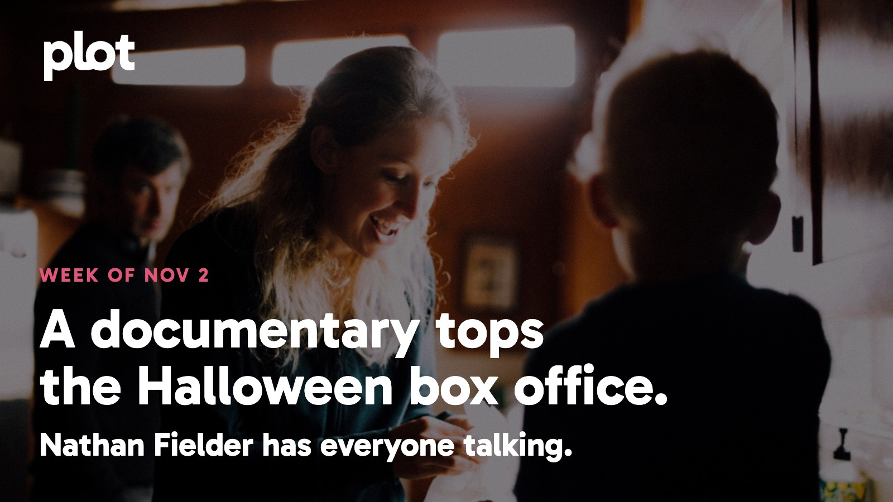

|
the week of November 2
|
|
Halloween is over, but nobody has told the box office. Clayface is still melting down, and Nathan Fielder has turned a documentary about Elizabeth Holmes into the weekend's biggest draw. At home, a new Ali drama is getting the kind of reviews that make room in your schedule. Ahead: Black Doves returns, two marriages collide in Possible Love, and a trip behind the scenes of Marie Antoinette offers a considerably prettier kind of tension.
 Image: You Can See Everything, promotional backdrop. Source: TMDB artwork. Text overlay by Plot.
In theaters
 Image: Clayface, promotional artwork. Source: TMDB.
You Can See Everything took the top spot with about $11.4 million over October 30-November 1, ahead of Clayface. A documentary outdrawing a comic-book horror movie on Halloween weekend is a pretty good reason to ask what everyone has been talking about.
Clayface puts a rising actor through a particularly gruesome identity crisis. Time Out enjoys the film's noir plotting and body horror. Choose this if your ideal DC movie owes more to The Fly than a team-up announcement.
Wildwood is Laika's latest stop-motion film, and RogerEbert.com welcomes the studio's return to fairy-tale adventure. The alternative for a movie night that wants imagination without quite so much exposed flesh.
What everyone's talking about
You Can See Everything makes access look like a trap. Elizabeth Holmes invited the filmmakers into her home to change the public story about her. The fascination is watching everyone try to control what that invitation means. The New Yorker finds a compelling contest of manipulation and apparent sincerity. In an enthusiastic audience thread, the conversation keeps returning to how the film plays with the documentary form. That thread isn't a verdict from every ticket buyer, but it does explain the urge to discuss this afterward. Go with someone who won't need to rush home.
 Image: The Greatest, promotional artwork. Source: TMDB.
The Greatest has a sensible answer to the question hanging over another Muhammad Ali biography: narrow the frame. The new Prime Video series concentrates on the young boxer becoming a champion, rather than trying to fit an entire legend into eight episodes. TheWrap praises the drama for finding a complicated person beneath the reputation, and RogerEbert.com singles out Jaalen Best's performance and the ensemble. Both find a reason to revisit a life you may think you already know. You don't need a working knowledge of boxing to recognize the pull of someone learning how much his voice can do.
Now on TV and Streaming
 Image: Collision Course, promotional artwork. Source: TMDB.
Collision Course is Netflix's new Spanish thriller, released October 30. A bank getaway crash exposes the people behind the robbery and the lies that arrived before it. Pick this when a plan going wrong is much more appealing than watching someone carefully execute one.
 Image: SCTV: The Greatest Show You've Never Heard Of, promotional artwork. Source: TMDB.
SCTV: The Greatest Show You've Never Heard Of is a new documentary film on Netflix. Reunited cast members look back at the scrappy Canadian sketch show that helped shape modern comedy. A good invitation for anyone who loves seeing funny people explain how they found each other.
Coming up
 Watch the official trailer on YouTube Watch the official trailer on YouTube
The Greatest arrives Wednesday, November 4 on Prime Video, with all eight episodes available. Jaalen Best plays the young Muhammad Ali in a drama about ambition, family, and finding a public voice. The early reviews above make this the week's strongest invitation to start a new series.
 Watch the official trailer on YouTube Watch the official trailer on YouTube
Black Doves returns to Netflix Thursday, November 5. In season two, Keira Knightley's spy is even closer to the center of British government, just as her professional safety net disappears. A dangerous job, a complicated friendship, and absolutely no chance of leaving work at work.
 Watch the official trailer on YouTube Watch the official trailer on YouTube
North of North brings season two to Netflix Thursday, November 5. Siaja is building a life on her own terms in an Arctic community where nobody is quite anonymous. The warmer choice if your week has already supplied enough conspiracies.
The charts
Your trending top ten for November 2, 2026.
Want more? See the full top 20 chart on Plot.
Weekend watch
 Image: Possible Love, promotional artwork. Source: TMDB.
Possible Love reaches Netflix Friday, November 6. Lee Chang-dong's first film in eight years follows two married couples brought together by a documentary. Their different circumstances and hidden desires make the encounter less straightforward than either household might like. Save this for a night when a look across a room can be as loaded as a chase. Save Possible Love for the weekend.
 Image: Making Marie Antoinette, promotional artwork. Source: TMDB.
Making Marie Antoinette comes to MUBI Friday, November 6. Eleanor Coppola's documentary follows her daughter Sofia directing at Versailles, turning long-unseen footage into a film about the work behind the spectacle. Come for the costumes; stay for the unusual experience of watching a director through her mother's camera. Save Making Marie Antoinette for the weekend.
Give Friday-you a head start: save your picks to your Plot watchlist now. The blanket can be a last-minute decision. The movie doesn't have to be.
Be that friend. Give the group chat its weekend watchlist.
Chart and title artwork: TMDB. This product uses the TMDB API but is not endorsed or certified by TMDB.
|
|
You're receiving this because you subscribed at theplot.tv.
Unsubscribe
SUSUMU HOUSE · Level 1, 63-73 Ann Street, Surry Hills, NSW 2010 |